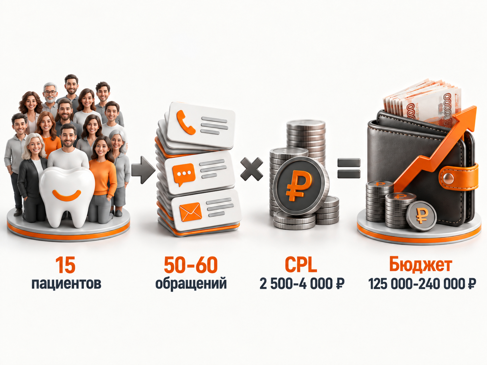
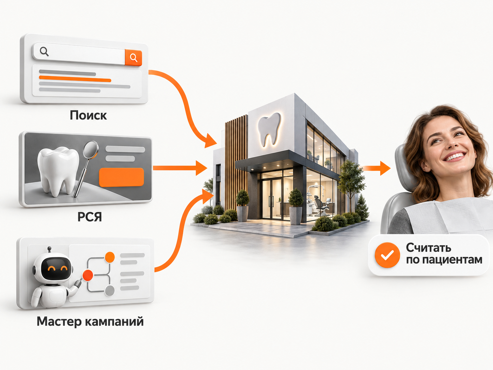

Блог о платном трафике
Продвижение стоматологии в 2026 году: реклама, бюджет и прогноз пациентов
Продвижение стоматологии нельзя нормально оценивать только по стоимости заявки. Клиника за 2 000 ₽ может получить человека, который не отвечает на звонок, а за 8 000 ₽ - пациента на имплантацию с большим планом лечения.
Поэтому я бы строил рекламу стоматологии от обратного: сколько новых пациентов нужно получить, какой процент обращений реально доходит до клиники и какую стоимость привлечения пациента выдерживает экономика.
По свежим российским кейсам 2026 года разброс большой. Обычная заявка из Яндекс Директа встречается примерно от 1 300 до 4 500 ₽, квалифицированное обращение - около 6 000-11 000 ₽, а в премиальной стоматологии стоимость может быть ещё выше. Это не средняя цена по рынку, а диапазон результатов конкретных проектов с разной географией, услугами и методикой учета.
Для первоначального прогноза клиники в городе-миллионнике я бы закладывал примерно 2 500-4 000 ₽ за обычное обращение и обязательно отдельно считал квалифицированные лиды, записи и фактические визиты.
Что показывают свежие кейсы стоматологий
Я посмотрел опубликованные российские кейсы преимущественно за март-сентябрь 2026 года. Сравнивать их напрямую нужно осторожно: где-то конверсией считается форма на сайте, где-то звонок, где-то запись, а где-то уже квалифицированный лид.
Тем не менее они дают нормальное представление о порядке цифр.
| Проект | Период и география | Результат |
|---|---|---|
| Стоматология полного цикла | Москва, 2026, 6 месяцев | 2,55 млн ₽ рекламного бюджета, CPL около 1 563 ₽, 505 новых пациентов, стоимость пациента около 5 050 ₽, конверсия из лида в пациента 31% |
| Тотальная имплантация и протезирование | Москва, январь-май 2026 | 3,17 млн ₽ расходов, 894 заявки, CPL 3 551 ₽ |
| Имплантация | Москва, кейс опубликован в марте 2026 | 272 заявки за 5 месяцев со средней стоимостью около 4 057 ₽ |
| Стоматология | проект 2026 года | За 2 месяца после переработки рекламы - 82 обращения по 3 622 ₽. Из них 49 квалифицированных, стоимость квалифицированного лида 6 061 ₽ |
| Имплантация | Москва | Обычная конверсия около 4 338 ₽, квалифицированный лид около 10 774 ₽ |
| Премиальная стоматология | Москва, январь 2026 | 204 035 ₽ расходов, 17 заявок, CPL около 12 000 ₽. По целевому поисковому трафику после отделения бренда встречалась стоимость 8 000-9 000 ₽, РСЯ дала обращения дороже 20 000 ₽ и была отключена |
Есть и проекты с существенно более дешёвыми конверсиями. Например, в кейсе московской стоматологии весной 2026 года сообщается о выходе примерно на 1 200-1 300 ₽ за запись, а отдельные поисковые направления давали конверсию дешевле 1 000 ₽. Но бюджет и количество конверсий в открытом кейсе скрыты, поэтому превращать такую цифру в ориентир для рынка я бы не стал.
На другом конце диапазона находится премиальная стоматология, где один лид может стоить 8 000-12 000 ₽ и дороже. Это не обязательно означает плохую рекламу. Нужно знать, кто из этих людей действительно пришёл и сколько денег оставил в клинике.
Почему нельзя искать одну «нормальную стоимость лида»
На цену обращения одновременно влияют:
- город и конкретный район;
- направление стоматологии;
- средний чек;
- известность клиники;
- отзывы;
- врачи;
- предложение;
- цены;
- посадочная страница;
- рекламный канал;
- качество обработки обращений.
Имплантация в Москве, профессиональная гигиена в Самаре и лечение кариеса в Новосибирске - фактически три разных рекламных продукта.
Даже две клиники одного бренда могут получать разную стоимость обращения.
В моём старом кейсе по протезированию двух московских стоматологий рекламные кампании были практически одинаковыми, а цена клика составляла 86,78 ₽ и 86,39 ₽. При этом одна посадочная конвертировала около 3,8% посетителей, вторая - около 4,6%. В результате заявки стоили 2 272 ₽ и 1 862 ₽.
Этот кейс относится к 2022 году, поэтому использовать его стоимость заявки как ориентир 2026 года нельзя. Но сам принцип не устарел: результат зависит не только от рекламного кабинета. Посмотреть подробный разбор можно в моём кейсе «Протезирование зубов в Москве».
Что считать результатом рекламы стоматологии
Минимальная воронка должна выглядеть так:
реклама -> обращение -> квалифицированный лид -> запись -> фактический визит -> лечение
Если клиника считает только отправленные формы и звонки, часть картины теряется.
Например, свежий кейс 2026 года показывает это особенно хорошо: 82 обращения превратились только в 49 квалифицированных. Формальный CPL составлял 3 622 ₽, а стоимость квалифицированного лида уже 6 061 ₽.
Поэтому в отчет я бы обязательно передавал хотя бы следующие статусы:
- новое обращение;
- целевое или нецелевое;
- записан;
- не записан;
- пришёл;
- не пришёл;
- начал лечение;
- сумма лечения.
И только после этого можно нормально оценивать рекламу.

Прогноз бюджета: сколько нужно стоматологии на Яндекс Директ
Ниже не норматив рынка, а рабочая модель для первоначального расчета.
Возьмём стоматологию в крупном российском городе и заложим:
- стоимость обычного обращения - 2 500-4 000 ₽;
- конверсию из обращения в фактического пациента - 25-30%;
- цель - 15 новых пациентов в месяц из рекламы.
При конверсии 25% для получения 15 пациентов потребуется около 60 обращений.
При конверсии 30% - около 50 обращений.
Получаем:
50-60 обращений × 2 500-4 000 ₽ = примерно 125 000-240 000 ₽ рекламного бюджета.
При таких вводных стоимость пациента получается примерно от 8 000 до 16 000 ₽.
Это уже значительно полезнее ответа «стоматологии нужен бюджет 150 тысяч». Сначала определяется нужное количество пациентов, затем конверсия воронки, допустимая стоимость обращения и только после этого бюджет.
Для Москвы, Санкт-Петербурга, премиальной клиники или продвижения только дорогих направлений я бы закладывал больший запас. Свежие кейсы показывают, что квалифицированное обращение по имплантации может стоить около 7 000-11 000 ₽, а иногда и дороже.
Как посчитать бюджет своей клиники
Допустим, клинике нужно 20 новых пациентов в месяц.
Если сейчас из 100 нормальных обращений до клиники доходит 25 человек, конверсия составляет 25%.
Для 20 пациентов потребуется:
20 / 25% = 80 обращений.
Если допустимая стоимость обращения составляет 3 000 ₽:
80 × 3 000 ₽ = 240 000 ₽ рекламного бюджета.
Если клиника повышает конверсию из обращения в пациента с 25% до 35%, для тех же 20 пациентов требуется уже около 57 обращений.
При том же CPL 3 000 ₽ бюджет снижается примерно до 171 000 ₽.
Поэтому иногда дешевле не искать способ снизить CPL с 3 000 до 2 500 ₽, а исправить работу администратора, запись и доходимость пациентов.
С каких услуг начинать продвижение
Я бы не запускал одновременно рекламу всех услуг стоматологии только потому, что они есть в прайс-листе.
Сначала нужно посмотреть три вещи:
- Есть ли достаточный спрос.
- Выдерживает ли услуга платное привлечение.
- Есть ли у клиники возможность принять дополнительный поток пациентов.
Часто рекламными локомотивами становятся имплантация, протезирование и ортодонтия. У них выше стоимость лечения, поэтому экономика позволяет выдерживать дорогой лид.
Но высокий чек одновременно означает более длинное принятие решения. Человек может посмотреть несколько клиник, изучить врачей, отзывы и цены и вернуться только через несколько дней.
Терапия, гигиена и другие более массовые услуги решают другую задачу. Чек ниже, но решение часто принимается быстрее.
Поэтому смешивать все направления в одну экономику неправильно. CPL по имплантации и CPL по гигиене ничего не говорят друг о друге.
Яндекс Директ для стоматологии
Для стоматологии Яндекс Директ остаётся одним из самых понятных платных каналов, потому что значительная часть спроса уже сформирована.
Человек сам ищет:
- имплантацию зубов;
- стоматологию рядом;
- брекеты;
- протезирование;
- лечение зуба;
- конкретную услугу в своём районе.
Именно поэтому я бы начинал с коммерческого поискового спроса и постепенно расширял рекламу после появления статистики.
Разделяйте направления
Не стоит отправлять запросы по имплантации, детской стоматологии, терапии и брекетам на одну страницу с заголовком «Современная стоматология».
У каждого направления:
- свой спрос;
- свой чек;
- свои конкуренты;
- свои возражения;
- своя посадочная страница;
- своя допустимая цена пациента.
Такая структура позволяет понимать, какое направление зарабатывает деньги, а какое просто генерирует дешёвые формы.
Учитывайте локальность
Для обычного лечения зубов местоположение клиники может быть одним из главных факторов выбора.
Нет смысла автоматически показывать рекламу на весь город, если большая часть пациентов выбирает стоматологию в пределах своего района, ближайших станций метро или удобного маршрута.
Для дорогой имплантации география может быть шире. Ради серьёзного лечения пациент готов ехать дальше, если доверяет врачу и клинике.
Поэтому географию нужно определять отдельно для каждого направления.
Проверяйте реальные поисковые запросы
Стоматологический трафик легко смешивается с информационными и некоммерческими запросами.
После запуска нужно регулярно смотреть, по каким запросам фактически были показы.
В зависимости от проекта приходится отсекать запросы про:
- бесплатное лечение;
- ОМС;
- государственные поликлиники;
- обучение;
- вакансии;
- домашнее лечение;
- учебные материалы;
- услуги, которых в клинике нет.
Готовый универсальный список минус-фраз использовать опасно. Чистить нужно реальные запросы конкретной клиники.

Поиск, РСЯ или Мастер кампаний
Я бы не утверждал, что для стоматологии всегда лучше какой-то один тип кампаний.
Есть свежие примеры совершенно противоположных результатов.
В моём историческом московском кейсе РСЯ принесла 482 заявки на протезирование. Поиск тогда оказался слишком дорогим.
В премиальном московском кейсе 2026 года произошло наоборот: Поиск давал целевые обращения примерно по 8 000-9 000 ₽, а РСЯ - дороже 20 000 ₽ и с плохим качеством. РСЯ отключили.
Поэтому Поиск, РСЯ и Мастер кампаний я воспринимаю как гипотезы.
Для первого запуска Мастер кампаний может быть полезен, если статистики ещё нет и нужно понять, где алгоритм найдёт конверсии. Но после запуска нужно смотреть не только CPA внутри Директа, а качество обращений.
Подробнее сам принцип работы инструмента я разбирал в статье «Мастер кампаний Яндекс Директ».
Не оптимизируйте рекламу по любой заявке
Для стоматологии это особенно опасно.
Если передать алгоритму в качестве главной цели любую форму, он будет искать людей, которые чаще заполняют формы. Это не обязательно люди, которые затем оплачивают лечение.
По мере накопления статистики полезнее отделять качественные обращения и передавать рекламе более глубокие сигналы из CRM.
Но нельзя автоматически переводить новую кампанию на оплату за конверсии и рассчитывать, что алгоритм сразу найдёт пациентов.
Если качественных целевых действий мало, данные дробятся между множеством кампаний и целей, обучение становится сложнее.
Сначала важнее собрать нормальную аналитику и достаточный объём данных.
Какой сайт нужен стоматологии для рекламы
Дорогой рекламный трафик нет смысла вести на слабую страницу.
Для каждого приоритетного направления желательно сделать самостоятельную посадочную страницу.
Например:
- имплантация;
- All-on-4 или All-on-6;
- протезирование;
- брекеты;
- элайнеры;
- лечение;
- детская стоматология.
На странице человек должен быстро получить ответы на основные вопросы.
Цена
Необязательно обещать одну фиксированную стоимость, если она зависит от клинической ситуации. Но полностью скрывать цены тоже плохая идея.
Можно показать стоимость этапов, диапазон или несколько вариантов лечения и объяснить, от чего зависит итоговая сумма.
Врачи
В стоматологии человек выбирает не только клинику.
Нужны реальные врачи, специализация, опыт, образование и понятное объяснение, кто будет заниматься конкретной проблемой.
Реальная клиника
Фотографии кабинетов, оборудования, ресепшена и команды уменьшают неопределённость.
Человек собирается физически приехать в это место и провести там достаточно неприятную медицинскую процедуру. Безликий лендинг этому не помогает.
Отзывы
Отзывы особенно важны для дорогого и эмоционального решения.
Но я бы смотрел не только на количество отзывов, а на их содержание. Подробный отзыв о конкретном враче или лечении обычно полезнее десятка одинаковых фраз «всё понравилось».
Запись
На странице должны быть очевидные способы связаться:
- телефон;
- форма;
- онлайн-запись;
- мессенджер, если клиника действительно его обрабатывает.
При этом звонки обязательно нужно учитывать через коллтрекинг.
Яндекс Карты для стоматологии
Карты для стоматологии - не дополнительная мелочь, а отдельная часть воронки.
Для локального запроса человек часто выбирает клинику непосредственно в выдаче Яндекс Карт, сравнивая:
- расстояние;
- рейтинг;
- количество отзывов;
- фотографии;
- цены;
- время работы;
- услуги.
В кейсе московской стоматологии за май-июль 2026 года после работы с карточкой количество переходов в профиль выросло на 56%, звонков - на 41%, построенных маршрутов - на 35%.
Поэтому карточка должна быть заполнена не для галочки.
Нужны актуальные услуги и цены, фотографии, ответы на отзывы, правильные категории, контакты и работа со свежими отзывами.
Для сети клиник каждую точку стоит анализировать отдельно.
Нужна ли стоматологии SEO-оптимизация
Да, если клиника работает на длинной дистанции.
Контекстная реклама позволяет начать получать трафик сразу, но за каждый переход приходится платить постоянно. SEO постепенно создаёт второй источник коммерческого спроса.
Структура сайта при этом во многом совпадает с правильной структурой рекламных посадочных:
- отдельные страницы услуг;
- страницы врачей;
- филиалы;
- цены;
- оборудование;
- вопросы пациентов;
- экспертные материалы.
Свежие кейсы стоматологий Москвы, Санкт-Петербурга и Новосибирска показывают рост видимости именно по отдельным коммерческим направлениям - имплантация, брекеты, протезирование и локальные запросы.
Но ждать от SEO такого же быстрого и прогнозируемого количества пациентов, как от уже работающего Директа, не стоит. Это накопительный канал.
Стоит ли использовать ВКонтакте
Я бы не ставил VK первым каналом вместо Яндекс Директа, если существует сформированный поисковый спрос.
Но после проверки Директа это нормальная гипотеза для масштабирования.
Например, в опубликованном московском кейсе по имплантации и протезированию за январь-май 2026 года через VK получили 1 352 заявки при расходах 2,11 млн ₽, то есть около 1 562 ₽ за заявку.
Но здесь снова возникает вопрос качества.
Лид из социальной сети и человек, который самостоятельно ввёл «имплантация зубов Москва», находятся на разных стадиях спроса. Сравнивать только CPL нельзя.
Ограничения рекламы стоматологии
Стоматология относится к медицинским услугам, поэтому реклама регулируется отдельно.
Яндекс требует документы, подтверждающие право оказывать медицинские услуги. Для российской клиники это в том числе лицензия с адресом и перечнем разрешённых видов медицинской деятельности. Адрес в документах должен соответствовать данным клиники и сайта.
Федеральный закон «О рекламе» устанавливает отдельные требования к рекламе медицинских услуг. В частности, реклама должна содержать предупреждение о противопоказаниях и необходимости консультации специалиста. Для рекламы, распространяемой способами, не относящимися к радио, телевидению и кино, под предупреждение предусмотрено не менее 5% рекламного пространства.
Поэтому рекламные объявления, изображения и посадочные страницы лучше проверять на соответствие требованиям до запуска, а не после отклонения модерацией.
Почему дешёвые заявки могут быть плохим результатом
Допустим, есть две кампании.
Первая:
- CPL - 1 500 ₽;
- 100 заявок;
- 10 пациентов.
Стоимость пациента - 15 000 ₽.
Вторая:
- CPL - 3 000 ₽;
- 60 заявок;
- 18 пациентов.
Стоимость пациента - 10 000 ₽.
По рекламному кабинету первая выглядит лучше. Для бизнеса лучше работает вторая.
Именно поэтому я не стал бы ставить задачу специалисту «сделайте заявку дешевле 2 000 ₽».
Нормальная задача звучит ближе к «получать пациентов с допустимой стоимостью привлечения и масштабировать объём без ухудшения экономики».
Если Директ приводит много дешёвых, но нецелевых обращений, отдельно стоит разбирать качество трафика. Эту проблему я подробно рассматривал в материале «Нецелевые и некачественные лиды из Яндекс Директа».
Основные ошибки в продвижении стоматологии
Считать только заявки
Форма на сайте ещё не пациент и даже не всегда квалифицированный лид.
Продвигать все услуги одной кампанией
Экономика имплантации и гигиены совершенно разная.
Отправлять весь трафик на главную
Человек искал конкретную услугу и должен сразу получить страницу об этой услуге.
Не учитывать звонки
Для стоматологии значительная часть обращений проходит по телефону. Без коллтрекинга рекламная статистика будет неполной.
Не передавать качество обращений обратно маркетологу
Если специалист видит 100 лидов, но не знает, что 60 из них нецелевые, он продолжит оптимизировать кампанию в неправильную сторону.
Оценивать только рекламный кабинет
Сайт, администратор, скорость ответа, цены, отзывы и свободное расписание врачей влияют на итог не меньше рекламы.
Масштабировать слишком рано
Сначала нужно подтвердить, что связка приводит реальных пациентов. Только после этого увеличивать бюджет.
Пошаговый план продвижения стоматологии
- Определить услуги, на которые клинике действительно нужны новые пациенты.
- Посчитать допустимую стоимость пациента по каждой услуге.
- Проверить сайт и сделать отдельные страницы под основные направления.
- Настроить Яндекс Метрику, коллтрекинг и передачу обращений в CRM.
- Разделить обращения минимум на целевые и нецелевые.
- Подготовить медицинские документы для модерации.
- Запустить коммерческий спрос в Яндекс Директе.
- Отдельно протестировать РСЯ или Мастер кампаний, если это оправдано.
- Регулярно проверять реальные поисковые запросы.
- Связать расходы с записями и фактическими визитами.
- Доработать карточки клиники в Яндекс Картах.
- Параллельно развивать SEO по коммерческим направлениям.
- Масштабировать только те услуги и кампании, где понятна стоимость пациента.
Какой результат закладывать на старте
Если у клиники пока нет собственной статистики, я бы не обещал конкретный CPL.
Для первоначального финансового плана стоматологии в крупном городе можно использовать диапазон 2 500-4 000 ₽ за обычное обращение.
Если целью являются квалифицированные обращения по дорогой имплантации, особенно в Москве, ориентир нужно увеличивать. По свежим кейсам встречается примерно 6 000-11 000 ₽ за квалифицированный лид, а премиальный сегмент может быть дороже.
При конверсии обращения в пациента около 25-30% рабочая расчётная стоимость нового пациента при CPL 2 500-4 000 ₽ составляет примерно 8 000-16 000 ₽.
Это не обещание результата и не среднее значение рынка. Это стартовая модель, которую после первых нескольких недель нужно заменить фактическими данными конкретной клиники.
Главное - не пытаться любой ценой получить самую дешёвую заявку.
Для стоматологии правильная единица измерения - пациент, который дошёл до клиники и начал лечение.
И уже от стоимости такого пациента нужно принимать решения о рекламном бюджете, каналах и дальнейшем масштабировании.
Если нужна общая логика подготовки рекламного кабинета, она подробно разобрана в моей инструкции «Настройка Яндекс Директ: что входит и как правильно запустить рекламу».